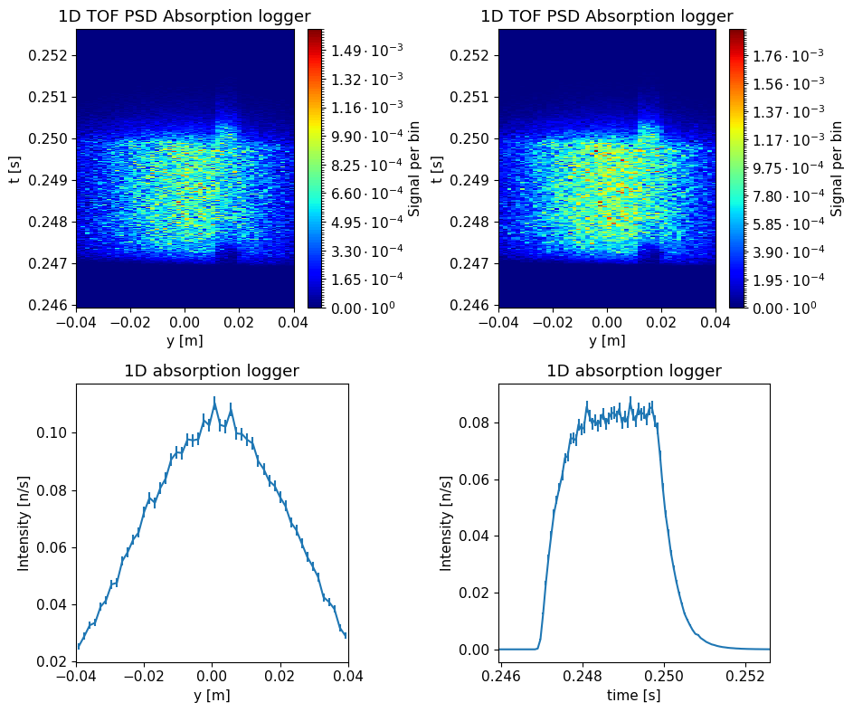

import mcstasscript as ms
import make_QENS_instrument
import quizlib
quiz = quizlib.QENS_Quiz()
QENS exercise#
This notebook contains code and questions for a McStas simulation of a simplified backscattering instrument that can investigate quasi-elastic scattering from samples.
Quasi-elastic scattering is inelastic scattering with small energy transfers and typically seen as a broadening of the elastic signal. At ESS the backscattering instrument under construction is called MIRACLES and uses the indirect geometry time of flight technique, here neutrons are scattered of the sample and some hit an analyzer crystal afterwards. This analyzer is angled such that if the neutron is scattered almost backwards, and due to Braggs law this will happen with a certain energy.
It turns out the precision of that energy is highest when the neutron is scattered back in the direction it came from, but most instruments choose a slightly lower angle to avoid hitting the sample a second time. The detector is then placed slightly above or below the sample.
Since the analyzer choose a specific energy, the final energy of the neutrons being recorded in the detector is known, this can be used to calculate the time of the neutron to the sample position. Then the time at that moment and the known pulse time can be used to calculate the time-of-flight, which with the known distance from source to sample gives the speed and thus energy before scattering in the sample. The difference between the known initial and final energy provide the energy transfer, which for backscattering can be down to \(\mu\)eV, where most other inelastic techniques look at meV.
In this notebook you will get a McStas model of simplified backscattering instrument which can be used to perform virtual experiments. You will run a few and answer questions about the results. You will also get to improve it and run experiments with a small range of known and unknown samples. We will use the Python McStas API McStasScript to work with the instrument, you can find documentation here.
Get the instrument object#
First we need the McStas instrument object. Here it is retrieved from a local python function that generates it.
instrument = make_QENS_instrument.make()
Investigate instrument#
First investigate the instrument object instrument using some of the available methods.
All the methods that help do that start with the word show.
In particular, look at what parameters are available and take a look at the instrument geometry.
Set parameters#
Before running the instrument we need to set some parameters on the instrument.
The most important one is the sample_distance parameter describing the distance between the source and the sample.
Given the need for high precision in determining the energy of the neutron, which of the following instrument lengths should be chosen?
A: 30 m
B: 60 m
C: 150 m
quiz.question_1()
Set the sample_distance corresponding to the answer above and set the simulated energy width to 5 \(\mu\)eV.
Keep the sample type to Elastic and number of pulses to 1. Use the set_parameters method on the instrument object.
# Validate the instrument by giving it to the question_2
quiz.question_2(instrument)
Instrument settings#
Before performing a simulation a few settings pertaining to the technical side should be set. These use a different method to clearly distinguish them from the instrument parameters. One important parameter is called output_path which sets the name of the generated folder.
instrument.settings(ncount=5e7, mpi=4, suppress_output=True, NeXus=True, output_path="first_run")
Run the simulation#
Now the simulation can be executed with the backengine method on the instrument object. Store the returned data in a python variable called data.
data = instrument.backengine()
data
[
McStasData: signal_tof_all type: 2D I:3.55012 E:0.0133234 N:367699.0,
McStasData: signal_tof type: 2D I:3.55012 E:0.0133234 N:367699.0,
McStasDataEvent: signal_tof_event with 563420 events. Variables: p x y n id t,
McStasData: signal_space type: 1D I:3.55028 E:0.0133234 N:563420.0,
McStasData: signal_time type: 1D I:3.55012 E:0.0133234 N:367699.0]
Visualize the data#
The data objects in the returned list can be plotted with the McStasScript function make_sub_plot.
ms.make_sub_plot(data, figsize=(9.5, 8))
Skipped plotting signal_tof_event as it contains event data.

Explanation of data#
The data is all from a He3 tube which can only be reached from the sample by being scattered almost backwards from a Si analyzer crystal.
Two 1D monitors show the spatial and time distribution of the signal respectively.
The two 2D monitors show the correlation between time and position, though one will zoom out to capture multiple pulses if n_pulse is set to more than one.
Questions#
Look at the time distribution of the signal, which statement about this data is true?
A: The data looks like a typical inelastic signal
B: The data looks like the ESS pulse structure
C: The data looks like a typical elastic signal
D: The data looks like the analyzer selected to broad an energy range
quiz.question_3()
Is this a problem for a backscattering instrument?
A: Yes, the low time resolution means low energy resolution
B: No, the low time resolution is not necessary for high energy resolution
quiz.question_4()
How can the instrument be improved?
A: Add a chopper to control the time aspect
B: Add a slit before sample to reduce the illuminated area
C: Add a slit before analyzer to ensure same angle
D: Add a spin polarizer to select spin state
quiz.question_5()
Improve the instrument#
In order to improve the performance of the instrument, we will add a McStas component. The first aspect to consider when doing so is where to place it, both in the component sequence and its physical location. We start by investigating where to put the component in the component sequence, as that needs to be specified when adding the component, and the physical location can be updated later.
McStas sequence#
Use either the show_diagram or show_components method on the instrument object to get an overview of the component sequence in the instrument.
Where would you place the new component?
A: After the source
B: Before the sample position
C: After the sample position
D: After the analyzer
quiz.question_6()
Which component#
Now we need to select what type of component to add to the instrument, here we will need the DiskChopper component.
Use the component_help method on the instrument object to learn more about this component.
Chopper calculations#
When adding a chopper one need to perform calculations to obtain the appropriate rotation frequency and phase. For this exercise, those calculations can be added to the instrument using a function included in the given Python file.
make_QENS_instrument.add_chopper_code(instrument)
To see what variables are used in the instrument, one can use the show_variables method like below. This will included the ones added by the above function.
Add chopper component and set parameters#
Use the add_component method on the instrument object to add a chopper.
Place it in the component sequence according to your answer in question 6 by using either the before or after keyword argument.
The add_component method returns a component object, store that in a python variable.
Set the parameters:
yheight: 0.05 mradius: 0.7 mnslit: 1.0nu,delayandtheta_0: To the variables calculated in the instrument (use quotation marks)
To check if the component was added correctly, provide your instrument object to the question_7 function below.
# Validate the instrument again
quiz.question_7(instrument)
Placing the component in space#
The next task is to specify the physical location of the component, this is done using the set_AT method on the component object.
This method takes a list of 3 numbers, corresponding to the x, y and z coordinates of the component.
One can also specify in what coordinate system one wants to work, which can be that of any preceding component.
Use the RELATIVE keyword to work in the source coordinate system.
The position of the chopper is needed for calculating phase, so it is available as a variable in the instrument, use this variable to set the position.
To check if the component was added correctly, provide your instrument object to the question_7 function below.
quiz.question_8(instrument)
Verify new component#
Now that the chopper has been added to the instrument, lets show the component sequence again to verify it was added correctly.
Run improved instrument#
Run the improved instrument with the following parameters:
sample_distance: 150 menergy_width_ueV: 5 ueV (This controls the simulated energy range, should be larger than inelastic signal width)sample_choice: ‘“Elastic”’frequency_multiplier: 10 (This controls the ratio between chopper and source frequency)
Use the settings method to set a reasonable name, including the sample type.
Store the resulting data in a variable called data_improved.
Plot the data using the make_sub_plot function.
Time resolution#
Using the plotted data above its possible to get a estimate of the time resolution of the instrument.
Use the cursor to zoom and read of values for the time resolution of the instrument (FWHM). Insert the found time in the question below as a value in seconds.
quiz.question_9()
Run with known calibration sample#
Next we will run a simulation with a known calibration sample, its energy width can be adjusted with the gamma_ueV (HWHM). Run with the following parameters:
sample_choice: ‘“Known_quasi-elastic”’gamma_ueV: 12 ueVenergy_width_ueV: 150 ueV
Again set a descriptive name, call the produced data data_known.
Plot the data with make_sub_plot.
What is the time width when using a known sample with 12 ueV broadening? Insert the answer with units of seconds.
quiz.question_10()
Run with unknown sample#
Finally we can run a virtual experiment with an unknown sample.
sample_choice:"Unknown_quasi-elastic"energy_width_ueV: 150 ueV
Again set a descriptive name, call the produced data data_unknown.
Plot the data using make_sub_plot.
Estimate unknown sample energy width#
By comparing the data from the known and unknown sample, provide an estimate of the energy width of the unknown sample. Insert the result below in ueV (HWHM). This questions is optional, if short on time go to the next question.
quiz.question_11()
Increase the number of neutrons#
Your final task is to re-run the simulations for the 3 different samples, using more neutrons to improve the signal-to-noise ratio of the results.
This is controlled using the ncount parameter on the instrument object.
We will use this data in the exercises for the rest of the week.
Hints:
Change the destination folder so that you don’t overwrite the results from your previous simulations.
Solution: